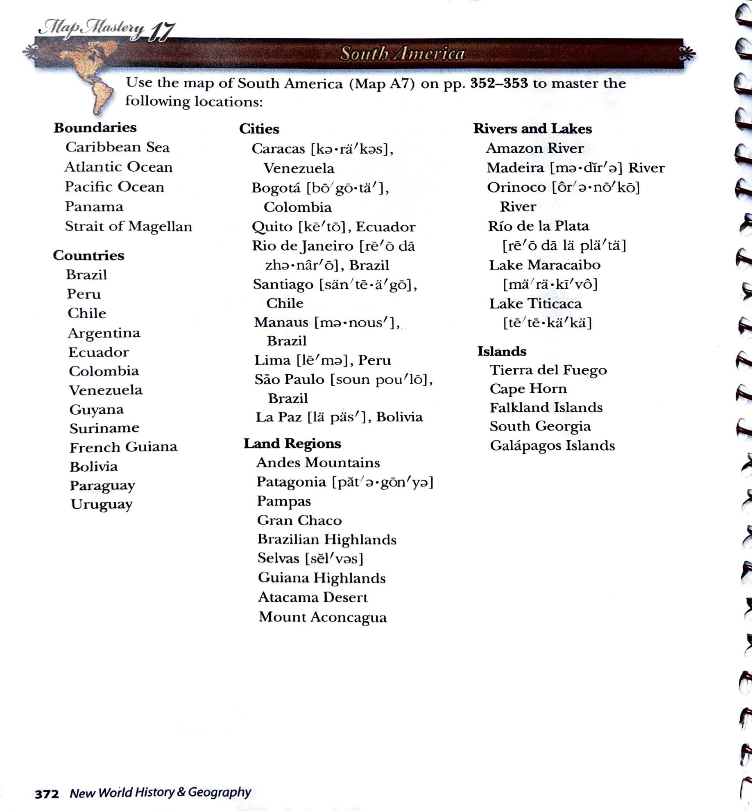

Map Mastery 17 · South America
Map Mastery 17 · South America
Use the map of South America (Map A7) on pp. 352–353 to master the following locations:
Boundaries
- Caribbean Sea
- Atlantic Ocean
- Pacific Ocean
- Panama
- Strait of Magellan
Countries
- Brazil
- Peru
- Chile
- Argentina
- Ecuador
- Colombia
- Venezuela
- Guyana
- Suriname
- French Guiana
- Bolivia
- Paraguay
- Uruguay
Cities
- Caracas, Venezuela
- Bogotá, Colombia
- Quito, Ecuador
- Rio de Janeiro, Brazil
- Santiago, Chile
- Manaus, Brazil
- Lima, Peru
- São Paulo, Brazil
- La Paz, Bolivia
Land Regions
- Andes Mountains
- Patagonia
- Pampas
- Gran Chaco
- Brazilian Highlands
- Selvas
- Guiana Highlands
- Atacama Desert
- Mount Aconcagua
Rivers and Lakes
- Amazon River
- Madeira River
- Orinoco River
- Río de la Plata
- Lake Maracaibo
- Lake Titicaca
Islands
- Tierra del Fuego
- Cape Horn
- Falkland Islands
- South Georgia
- Galápagos Islands
Multiple-choice practice
Use the study list and linked Atlas map to choose your answers. These questions are an adaptation for Harlan; they are not printed questions from the source.
Original source page 372
Location names, headings and instructions were compared with the supplied source page. Source-era classifications are preserved. Pronunciation-guide glyphs remain in the original image and are not transcribed into the list.
Open full-size source page